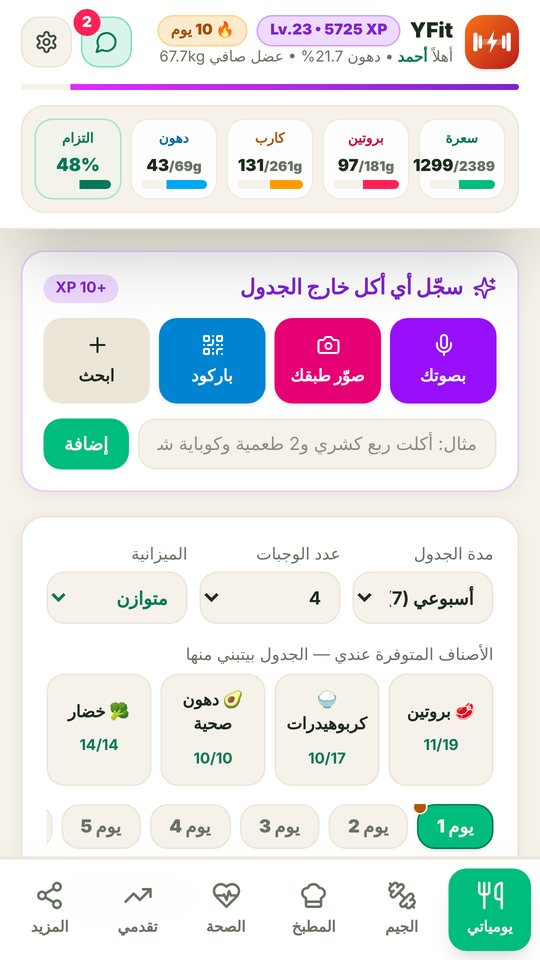
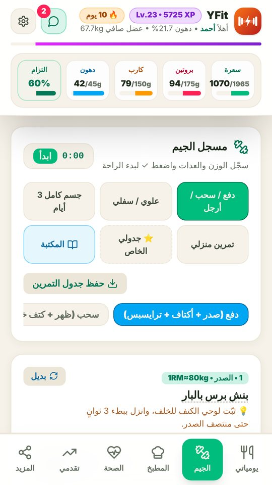
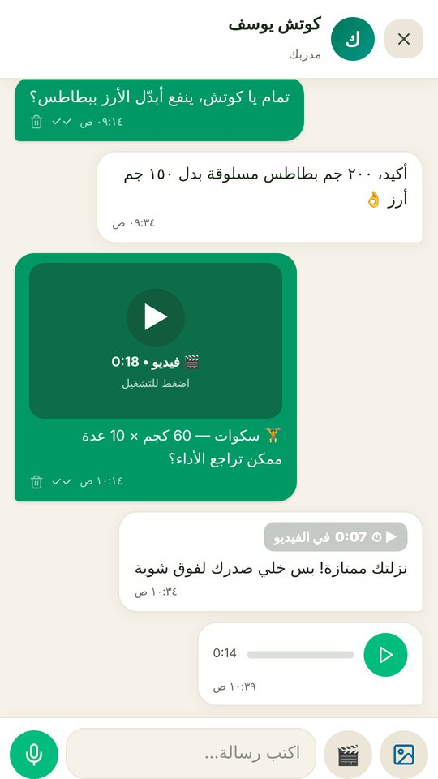
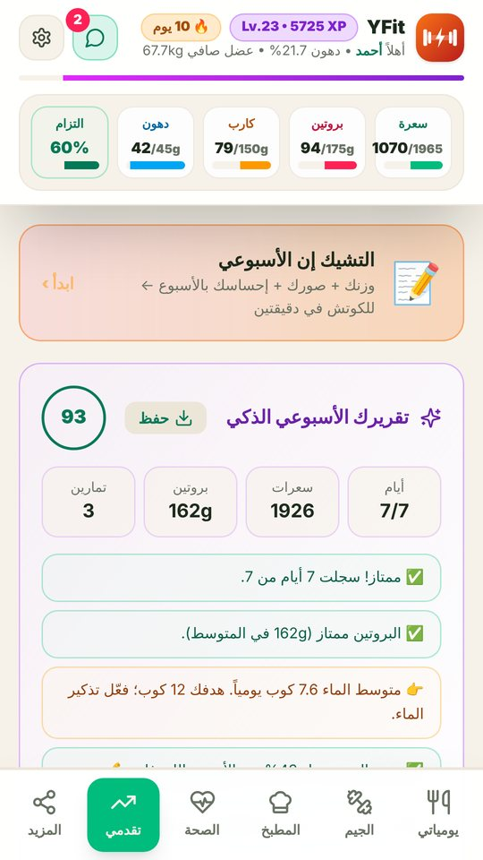

كوتشك في جيبك
كل يوم.
جدولك الأسبوعي بيوصلك من الكوتش، أكلك محسوب بالجرام من الأكل المصري اللي في بيتك، وتمرينك متسجّل. ولو احتجت حاجة، الكوتش معاك على الشات.
التطبيق في مرحلة التجربة دلوقتي، وهيبقى متاح للتحميل قريب جداً.
كل اللي محتاجه علشان توصل لهدفك
من أول جدول الأكل لحد رسالة الكوتش. كل حاجة في مكان واحد وبالعربي.
جدولك الأسبوعي من الكوتش
كل أسبوع بيوصلك كارت جديد فيه وجباتك ومقاديرها والماكروز، وإشعار أول ما ينزل. علّم على كل وجبة بتاكلها، والكوتش يتابع التزامك.
أكلك محسوب بالجرام
سعراتك وماكروزك محسوبين على وزنك وهدفك، ووزن كل صنف مكتوب مطبوخ ونيء، ومعاه أكتر من 230 أكلة مصرية.
صوّر طبقك
سجّل أكلك بصوتك، أو صوّر الطبق والذكاء الاصطناعي يحسبه، أو امسح باركود المنتج.
فيديو للكوتش
صوّر نفسك وإنت بتلعب التمرين وابعته، والكوتش يعلّق على الثانية بالظبط اللي محتاجة تتصلّح.
تشيك إن أسبوعي
وزنك، وقياساتك، وإحساسك بالأسبوع، وصور قبل وبعد. كله بيوصل للكوتش في دقيقتين.
شات وصوت
كلّم الكوتش بالكتابة، أو برسالة صوتية، أو بصورة. ولو النت فصل، رسالتك بتتبعت أول ما يرجع.
قائمة مشتريات وتصدير
قائمة مشتريات الأسبوع بالكيلو والتكلفة، واحفظ أي جدول PDF أو صورة أو Excel وابعته لأي حد.
شارات وتقارير
تقرير كل أسبوع بدرجة التزامك، وشارات على كل إنجاز، علشان تفضل متحمّس.
بسيط، وواضح، ومعمول ليك
اسحب علشان تشوف باقي الشاشات ←

سجّل أكلك في ثانية
تمرينك خطوة بخطوة
شات وفيديو مع الكوتش
تشيك إن وتقرير أسبوعي3 خطوات وتبدأ
حمّل التطبيق
اكتب وزنك وطولك وهدفك، والتطبيق يحسبلك السعرات والجدول على طول.
اربط حسابك بالكوتش
اعمل حساب، وحسابك هيتربط بكوتش يوسف، وجدولك الأسبوعي هيبدأ يوصلك.
التزم واتابع
علّم على وجباتك، وسجّل تمرينك، وابعت التشيك إن كل أسبوع، والكوتش يظبطلك البرنامج.
كوتش يوسف
YFit معمول علشان كل متدرب ياخد متابعة حقيقية، مش جدول ويتساب. الكوتش بيشوف التزامك يوم بيوم، ويرد على أسئلتك، ويعدّل برنامجك كل أسبوع حسب تقدمك.
- ✅ برنامج على مقاسك: سعراتك وأكلك محسوبين على جسمك وهدفك.
- ✅ متابعة كل أسبوع: التشيك إن والصور بيوصلوا للكوتش، وبيرد عليك.
- ✅ أكل من بيتك: أصناف مصرية متوفرة، وبدائل لكل صنف.
أسئلة بتتسأل كتير
التطبيق بيشتغل من غير إنترنت؟
أيوه. جدول الأكل والتمرين وتسجيل الوزن كلهم بيشتغلوا من غير نت، وبياناتك بتتحفظ على موبايلك. محتاج نت بس للشات، ولتحليل صور الأكل، ولمزامنة بياناتك مع الكوتش.
مين يقدر يشوف بياناتي وصوري؟
إنت والكوتش المرتبط بيك بس. صور التطور والرسايل محفوظة في مساحة خاصة ومحمية، ومحدش غيركم يقدر يوصلها. التفاصيل كلها في سياسة الخصوصية.
الأكل في الجدول مناسب للبيت المصري؟
أيوه. التطبيق فيه أكتر من 230 صنف مصري، من الفول والكشري للفراخ والسمك، وتقدر تختار الأصناف المتوفرة عندك وميزانيتك، والجدول يتعمل منهم.
أقدر أحذف حسابي؟
طبعاً، في أي وقت ومن جوه التطبيق، وبياناتك بتتمسح نهائياً من السيرفر. شوف خطوات حذف الحساب.
هل التطبيق بديل عن الدكتور؟
لأ. YFit أداة متابعة وتنظيم للأكل والتمرين. لو عندك أي مشكلة صحية أو بتاخد علاج، راجع دكتورك الأول قبل ما تبدأ أي نظام غذائي.
جاهز تبدأ؟
التطبيق نازل قريب على جوجل بلاي. ابعتلنا على واتساب علشان تبقى من أول المتدربين.
واتساب: 01121166099